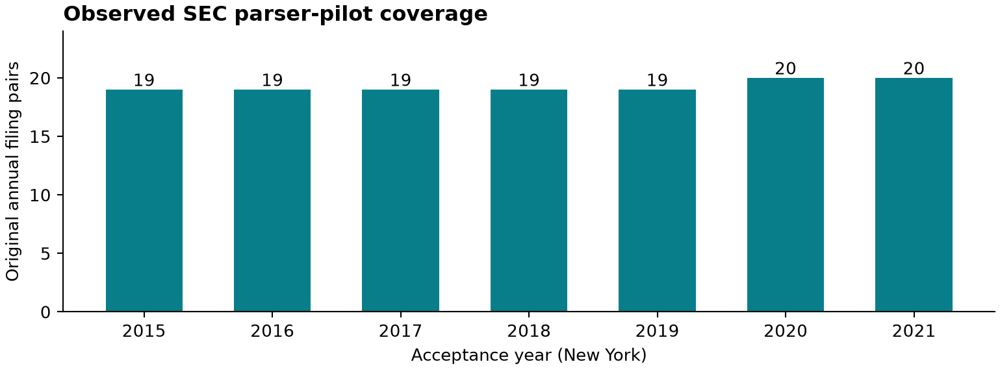
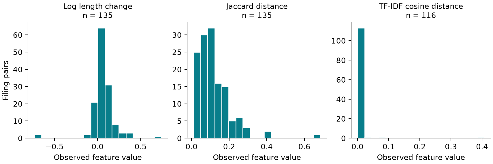

What changes when
the risk disclosure changes?
A study of whether changes in annual Item 1A disclosures improve 20-session market-adjusted return forecasts beyond momentum, volatility, size and historical industry.
The real 2022–2025 evaluation remains unopened. Historical data and source-bound human reviews are still needed. Synthetic demonstrations verify the pipeline and do not establish predictive performance.
A reproducible text checkpoint
The recovered SEC sources pass all 155 automated checks. The audit preserves 14 reference resolutions and 72 API/header timestamp differences. All 135 provisional market calculations independently reconcile within 1e-12, while their historical identities remain unapproved.


The frozen comparison
Both ridge models use the same pre-event controls. The augmented model adds log length change, Jaccard distance and training-only TF-IDF cosine distance. Penalties are selected on 2016–2021 development folds.
Final annual refits use only earlier events whose labels have matured. Paired reference-month blocks preserve firms and time dependence, with three-month and six-month intervals.
Read the primary protocolEvidence before estimates
Historical population selection, source hashes, review records, exclusions, development predictions and code are bound to the freeze. Final features and targets are separate.
The complete invented demonstration selects 192 annual memberships, trains on 144 development events and evaluates 48 synthetic final events. The real final sample is still pending.
Inspect the verification recordWhat is built, and what remains
| Stage | Implemented | Remaining empirical work |
|---|---|---|
| 6 · Pilot | Source reproduction, text exhibits, audited smoke command, report | Reviews, sufficient 2019–2021 coverage, approved controls smoke |
| 7 · Dataset | Historical selector, SEC ingestion, audited joins, sealed targets | Full historical exports and additional filing audit |
| 8 · Freeze | Chronological selection, ablations, retrospective semantic comparator, fingerprints | Actual development choices and semantic/source evidence |
| 9 · Evaluation | Annual final refits, paired intervals and durable access records | Approved 2022–2025 estimates |
| 10 · Robustness | Year/month/groups, ablations, source-delay rebuilds and failure cases | Empirical execution and interpretation |
| 11 · Package | Code, tests, progress reports, figures and overview | Final measured results and independent reproduction |
The actual MiniLM backend and human semantic examples have not been validated. Its pinned revision is retrospective and makes no claim of historical availability.
Read the complete milestone recordReproduce the software
git clone https://github.com/michaelbawuah/Disclosure-drift.git
cd Disclosure-drift
make reproduce-full
make research-reportThe public build uses invented market data. Source audits additionally require the original cached sources and licensed private inputs.
Next empirical input
The full request covers dated listings, share classes, CIK/security links, liquidity, total returns and historical industry. Late-2025 filing labels need return coverage through February 3, 2026.
Complete the source-bound reviews, then run development and freeze the actual choices before the final evaluation.
Open the exact data request